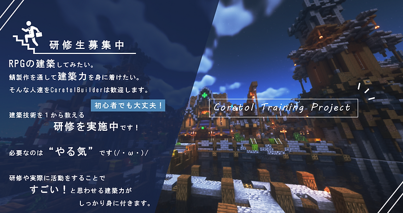
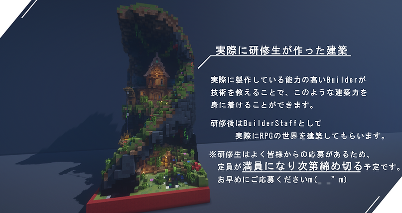
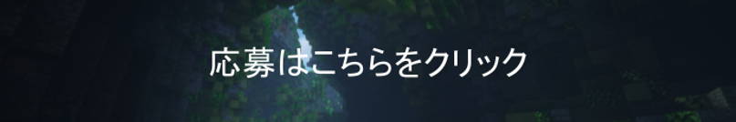

Coretolの制作に参加したい！
- Coretolでは制作チームを募集しています -
- 長期スタッフ
- 短期スタッフ
- 研修生
- 現在の年齢が13歳以上の方
- 未成年者の場合は法定代理人の同意を得た方
- 利用規約及び、制作スタッフ応募規約に同意された方
- 長期の制作の中で積極的に活動、ご活躍いただける方
- Minecraft Java Editionの正規アカウントをお持ちの方
- Googleアカウントをお持ちの方（フォーム記入時にログインが必要となります）
- Discord／X(Twitter)アカウントをお持ちの方
- ボランティア活動であり報酬などはないことをご了承いただける方
- Minecraft Java Edition Ver.1.16.5（2022/09/24 時点）
- サーバーの開発は長期に及ぶと予想されます、長期間携われる方のみご応募ください。
- 万が一途中退職することになった際にご自身の制作物が途中の場合、引継ぎを行うか、制作完了まで活動をお願い致します。
- 開発中に得られる一切の情報を許可なく外部に公開しないでください。
- 当サーバー用に制作されたものの著作権（著作権法２７条及び２８条で定められている権利を含む）は全て当サーバーに帰属します。たとえご自身が制作された物であっても、当サーバーの許可なく外部への公開、他のサーバーでの使用などは禁止します。
- 当サーバー用に制作されたもの全てにおいて著作人格権を行使しないこと。
- このフォームではメールアドレスを収集しております。
- こちらの記入内容は保存いたします。
- 捨てメアド等の一部ドメインは審査から除外させていただきます。
- 一定期間作業をされてない方はこちらから解雇をさせていただきます。
- 開発中に知り得た情報を許可なく外部に公開する行為
- 当サーバー用に制作されたものを許可なく外部に提供、使用する行為
- 当サーバー用に制作されたものを許可なく改変、使用、再配布する行為
- 他スタッフの作業を妨害する行為（失踪含む）
- 他スタッフの制作物を破壊する行為
- 他スタッフへの誹謗中傷／迷惑行為
- 注意事項／違反行為の抜け道を探し、実行する行為
- 当サーバー制作にあたって不利益となる行為
- 当サーバー運営が不当とみなすあらゆる行為
- 当団体が必要と判断した場合には、利用者に通知することなくいつでも本規約を変更することができるものとします。
- 規約及び契約違反をした場合は、利用規約第12条に基づき処罰することとします。
《一次審査》
・書類審査
- 当サーバーが求める仕事経験があるか
- 志望理由に当サーバーへの意欲、意志が見られるか
《二次審査》
・実技審査
- 課題の提示
※課題が提示されますので時間が確保できることを事前にご確認下さい
《三次審査》
・スタッフになるに際してボイスチャットでの面接
- Discordのボイスチャットにて、質問とスタッフとして活動する際の注意点などを確認し、審査させていただきます。（聞き専可）
Developer
Kotlinを用いてのPluginの制作や、Web開発（フロントエンド/バックエンド）を専門とした開発職です。
※経験の欄に希望する職種をご記入ください。複数選択可能です。（Plugin/Webフロントエンド/Webバックエンド）
※経験の欄にご自身で制作された成果物を添付してください。
Plugin：GitHubやBitBucket等のリンクとPlugin使用時の動画URL
Web：GitHubやBitBucket等のリンクとWebサイトのURL（URLを公開できない場合は操作中の画面をキャプチャし、動画URLでご提出ください）
- GitHubでPlugin及びWebのソースコードを共有すること
- Plugin及びWebを更新したらGitHubも更新すること
- Plugin及びWebを本番環境に反映するときにはGitHubにアップすること
- GitHubはPrivateにして、共同編集者という形でDeveloper職の人が閲覧できる状態にすること
Builder
主に建物やフィールドの制作を行う建築職です。
得意分野をお聞きしますので、こちらからそれに合わせた指示を行います。
※経験の欄にご自身で制作された建築物のスクリーンショットのリンクを張り付けてください。
なお、建築の補助としまして以下のプラグインを導入済みです。
- Fast Async WorldEdit
- Fast Async VoxelSniper
経験の欄にご自身が作成した建築物のスクリーンショットのリンクを張り付けてください。
Build Helper（兼任でのみ応募可）
主にBuilderの補助や、内装（インテリア）の制作を行う建築職です。
※経験の欄にご自身で制作された建築物のスクリーンショットのリンクを張り付けてください。
※Build Helperは他班との兼任の場合のみご応募可能です。
Mob Creator
MythicMobsでのMob制作を専門としたクリエイター職です。
フィールド・ストーリーにあったMobを考案し、制作・実装していただきます。
※経験の欄にご自身で制作されたMobの動画URLを張り付けてください。
Mob制作にあたり以下のプラグインを導入済みです。
- Fast Async WorldEdit
- Fast Async VoxelSniper
※その他MythicMobs関連のアドオンが導入されています。
Quest Creator
クエストの制作を専門としたクリエイター職です。
ストーリーに沿った内容から、ストーリーに合わせたサブストーリーまで様々なものを考えたうえ、実装していただきます。
なお、クエスト制作には独自のシステムを使用しております。
マニュアルを準備している為、サーバー実装にあたって特別な知識は必要ありません。
Sound Creator
フィールドBGM、広報用BGMの作曲等を専門としたサウンド系クリエイター職です。
フィールドの景観やストーリーから作曲をして頂きます。
ソフトウェアの指定はありません。
Skin Designer
NPCのスキン制作を専門としたデザイナー職です。
ストーリーの登場人物や、町などに配置するNPC用のスキン等を制作をしていただきます。
※経験の欄にご自身で制作されたスキンやMobデザインのスクリーンショットのリンクを張り付けてください。
3D Texture Designer
3Dテクスチャの制作を専門としたデザイナー職です。
武器などの制作のほかに、可能な方は"Model Engine 3"を使用した、Mobモデルの制作も行っています。
※経験の欄に希望する職種をご記入ください。複数選択可能です。（3Dテクスチャ/Mobモデル）
※経験の欄にご自身で制作された3Dテクスチャのスクリーンショットのリンクを張り付けてください。
Planner
企画やレベルデザイン、仕様書作成デバッグなどCoretolをより良くするため幅広く活動するプランナー職です。
応募時（1次審査時）に過去の経験の有無は問いません。2次審査にて実技試験を行い、適性審査を行います。
全てが出来る必要はなく、いくつかに適正があれば問題ありません。
・イベントの企画／運営
ゲーム内イベントの企画と運営
・レベルデザイン
ゲーム内のバランス調整（武器やMob等）
・規格策定
UIの規格策定や、lore規則の策定
・校閲
NPCの口調や語尾の確認、ストーリーとの齟齬がないかの確認
・仕様書作成
システム等の仕様書の執筆
・デバッグ
ゲームを本番環境でプレイし、バグが発生していないかの確認
・QA（Quality Assurance）
ゲームを本番環境で実際にプレイして、仕様通りにシステムが動作するのかを確認
※Plannerに関してはボイスチャットを行える方が望ましいです。（聞き専でも応募は可能です）
【募集休止中】2D Texture Designer
2D Texture Designerの募集は休止中です
2Dテクスチャの制作を専門としたデザイナー職です。
アイテムの制作のほかに、3Dテクスチャで制作された武器やアイテム等の2D化も行っています。
※経験の欄にご自身で制作された2Dテクスチャのスクリーンショットのリンクを張り付けてください。
短期スタッフの募集は休止中です
- 現在の年齢が13歳以上の方
- 未成年者の場合は法定代理人の同意を得た方
- 利用規約及び、制作スタッフ応募規約に同意された方
- 短期の制作の中で積極的に活動、ご活躍いただける方
- Minecraft Java Editionの正規アカウントをお持ちの方
- Googleアカウントをお持ちの方（フォーム記入時にログインが必要となります）
- Discord／X(Twitter)アカウントをお持ちの方
- ボランティア活動であり報酬などはないことをご了承いただける方
- Minecraft Java Edition Ver.1.16.5（2022/09/24 時点）
- サーバーの開発は短期ですが、短期間の中で積極的携われる方のみご応募ください。
- 万が一途中退職することになった際にご自身の制作物が途中の場合、引継ぎを行うか、制作完了まで活動をお願い致します。
- 連絡はDiscord／Googleスプレッドシートを使用します。
- 開発中に得られる一切の情報を許可なく外部に公開しないでください。
- 当サーバー用に制作されたものの著作権は全て当サーバーに帰属します。たとえご自身が制作された物であっても、当サーバーの許可なく外部への公開、他のサーバーでの使用などは禁止します。
- 当サーバー用に制作されたものなど全てにおいて著作人格権を行使しないこと。
- このフォームではメールアドレスを収集しております。
- こちらの記入内容は保存いたします。
- 捨てメアド等の一部ドメインは審査から除外させていただきます。
- 一定期間作業をされてない方はこちらから解雇をさせていただきます。
- 開発中に知り得た情報を許可なく外部に公開する行為
- 当サーバー用に制作されたものをを許可なく外部に提供、使用する行為
- 当サーバー用に制作されたものを許可なく改変、使用、再配布する行為
- 他スタッフの作業を妨害する行為（失踪含む）
- 他スタッフの制作物を破壊する行為
- 他スタッフへの誹謗中傷／迷惑行為
- 注意事項／違反行為の抜け道を探し、実行する行為
- 当サーバー制作にあたって不利益となる行為
- 当サーバー運営が不当とみなすあらゆる行為
- 当団体が必要と判断した場合には、利用者に通知することなくいつでも本規約を変更することができるものとします。
- 規約及び契約違反をした場合は、利用規約第12条に基づき処罰することとします。
《一次審査》
・書類審査
- 当サーバーが求める仕事経験があるか
- 志望理由に当サーバーへの意欲、意志が見られるか
《二次審査》
・実技審査
- 課題の提示
《三次審査》
・スタッフになるに際してボイスチャットでの面談
- Discordのボイスチャットにて、数個の質問とスタッフとして活動する際の注意点などを確認させていただきます。（聞き専可）
Skin Designer
スキンの作成を専門としたデザイナー職です。
町などのNPC用のスキンなどを作成していただきます。
今後、メインストーリにかかわる重要人物や、Mobなども製作していただくかもしてません。
※応募時に、ご自身が作成されたスキンのリンクを添付してください。
※自身の作成したスキンが退職後もサーバーに使用されることを了承していただける方。
※こちらからの要望をできる限り反映できる方。
研修生の募集は休止中です
次回募集再開時期は未定です。
【第2期】Builder 研修生
 
皆さんこんにちは。 Coretolです。
今回はご興味を持っていただける方に ぜひとも見てほしい内容となっております。
現在、Builderの研修生を募集しております。
１から技術を教え
誰でもすごい！と思わせる建築ができるようになります！
また、実際にStaffとして活動していただきたいと思っています。
詳細は画像の通り、「やる気」のある方募集中です。
応募数が多くなってしまう可能性もあり満員になり次第締め切らせていただきます。
・RPG建築を全力でやってみたい！
・自分の建築でCoretolのビルダーなんて...
等思っている方是非ご検討の程宜しくお願い致します！
研修生 応募はこちらから
- 現在の年齢が13歳以上の方
- 未成年者の場合は法定代理人の同意を得た方
- 利用規約及び、制作スタッフ応募規約に同意された方
- 短期の制作の中で積極的に活動、ご活躍いただける方
- Minecraft Java Editionの正規アカウントをお持ちの方
- Googleアカウントをお持ちの方（フォーム記入時にログインが必要となります）
- Discord／X(Twitter)アカウントをお持ちの方
- ボランティア活動であり報酬などはないことをご了承いただける方
- Minecraft Java Edition Ver.1.16.5（2022/09/24 時点）
研修生募集では、下記のチームのみで募集します。
応募後、面談をし、研修生で採用をするかを検討します。
定員になり次第締め切らせていただきます。
＝＝＝＝＝
- 自分から積極的に活動をすること。
- ボイスチャット環境があるのが望ましいです。
- 研修期間中はCoretol所属スタッフではありません。あくまで、研修生です。
- 連絡はDiscord／Googleスプレッドシートを使用します。
- 開発中に得られる一切の情報を許可なく外部に公開しないでください。
- 当サーバー用に制作されたものの著作権は全て当サーバーに帰属します。たとえご自身が制作された物であっても、当サーバーの許可なく外部への公開、他のサーバーでの使用などは禁止します。
- 当サーバー用に制作されたものなど全てにおいて著作人格権を行使しないこと。
- このフォームではメールアドレスを収集しております。
- こちらの記入内容は保存いたします。
- 捨てメアド等の一部ドメインは審査から除外させていただきます。
- 研修中でもこちら側の判断で、研修を終了することができます。
- 開発中に知り得た情報を許可なく外部に公開する行為
- 当サーバー用に制作されたものをを許可なく外部に提供、使用する行為
- 当サーバー用に制作されたものを許可なく改変、使用、再配布する行為
- 他スタッフの作業を妨害する行為（失踪含む）
- 他スタッフの制作物を破壊する行為
- 他スタッフへの誹謗中傷／迷惑行為
- 注意事項／違反行為の抜け道を探し、実行する行為
- 当サーバー制作にあたって不利益となる行為
- 当サーバー運営が不当とみなすあらゆる行為
- 当団体が必要と判断した場合には、利用者に通知することなくいつでも本規約を変更することができるものとします。
- 規約及び契約違反をした場合は、利用規約第12条に基づき処罰することとします。
《一次審査》
・書類審査
- 当サーバーが求める仕事経験があるか
- 志望理由に当サーバーへの意欲、意志が見られるか
《二次審査》
・実技審査
- 課題の提示
《三次審査》
・VCでの面接
【第2期】Builder 研修生
主にマップの制作を行っている部門です。
研修期間中は、担当者が指導します。
建築の補助としまして以下のプラグインを導入済みです
-Fast Async WorldEdit